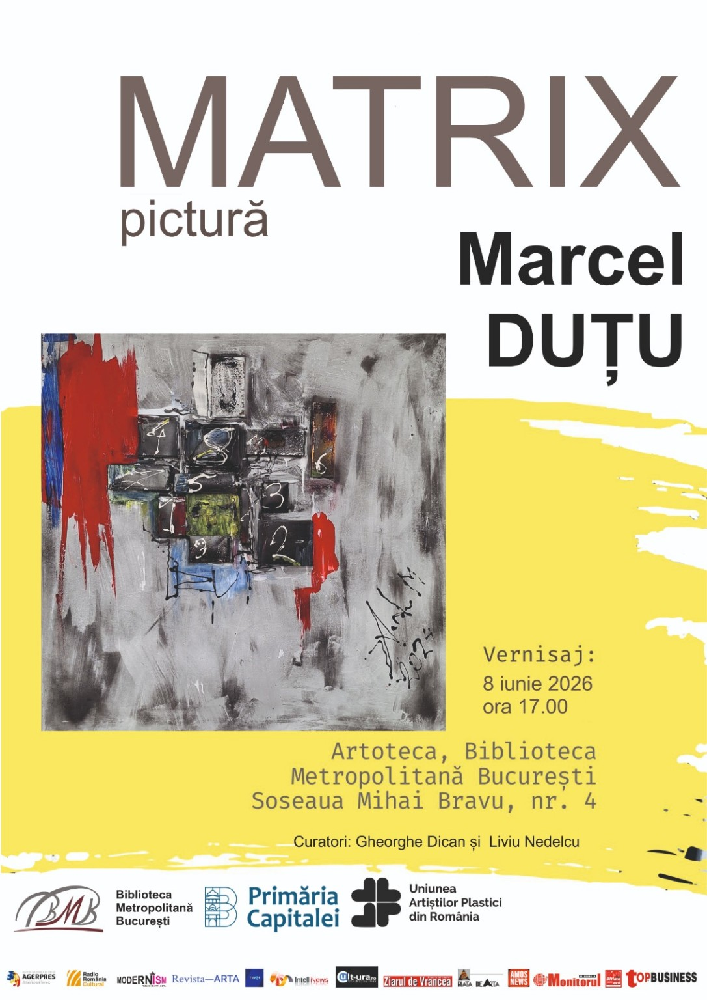

Artist plastic · Pictură · Tehnică mixtă
Artă care se descoperă în straturi.
Universul artistic al lui Marcel Duțu, construit prin culoare, materie, gest și intervenție.
Descoperă operele
Colecție
Opere
O selecție de lucrări ale artistului. Fiecare operă are o pagină dedicată pentru prezentare și solicitări de achiziție.



Parcurs artistic
Expoziții, spații, materie.
Lucrările lui Marcel Duțu au fost prezentate în contexte expoziționale diferite, de la galerie la spații neconvenționale. Vezi o selecție de materiale din expoziții.
Vezi expozițiileArtist
Marcel Duțu
Pictură și tehnică mixtă, într-un limbaj vizual în care culoarea, textura și desenul se întâlnesc. Pagina dedicată artistului va include biografia și parcursul expozițional pe baza informațiilor furnizate de Marcel Duțu.